Ansible deployment
Automating Web App Deployment Using Ansible on AWS EC2 Instances
🚀 Project Overview
This project involves setting up and deploying a simple web application using Ansible by automating various tasks. Key steps include creating EC2 instances on AWS, installing Ansible on the host server, copying the necessary SSH keys, setting up an inventory file, and writing a playbook to install and configure Nginx. The project aims to execute these steps efficiently to set up a working environment where a sample web page can be deployed and accessed through the public IPs of the EC2 instances.
🔧 Problem Statement
automate the deployment of a simple web application on AWS EC2, ensuring scalability and efficient management of resources through Ansible, thereby reducing manual setup efforts and potential human errors. Given Ansible's industry-wide adoption for its simplicity and effectiveness in configuration management and automation, this project seeks to leverage these capabilities to streamline cloud operations and enhance productivity.
💽 Techonology Stack
● AWS EC2: Virtual servers in the cloud for running applications. ● Ansible: Automation tool for configuration management and application deployment. ● Nginx: Web server to serve the web application. ● GitHub: Source control to manage and store playbook and application files. ● SSH: Secure protocol for managing machines over a network. ● YAML: Language used for writing Ansible playbooks. ● .pem Keys: Private keys for secure access to AWS EC2 instances.
📌 Architecture Diagram
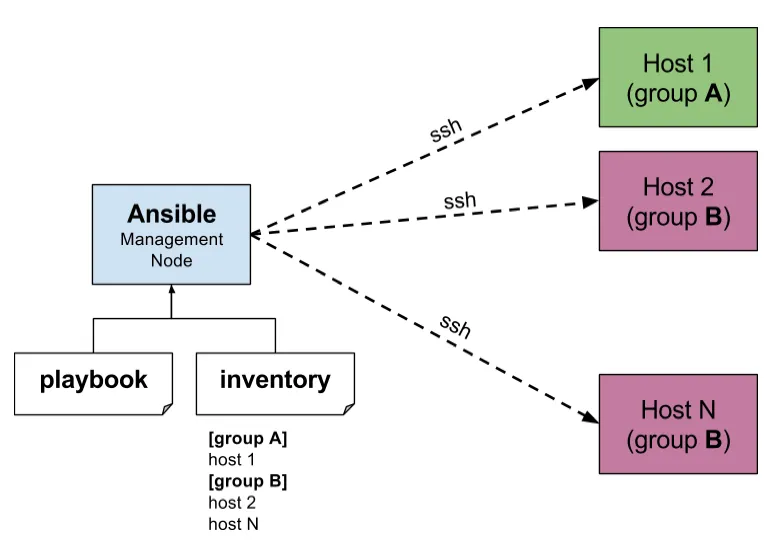
📋 Table of Contents
- Step-1: Create EC2 instances
- Step-2: Install Ansible in Host Server
- Step-3: Copy SSH Key
- Step-4: Create a playbook to install Nginx
- Step-5: Deploy a sample webpage using the ansible playbook
- Step-6: Cleanup
🚦 Getting Started
🌟 Prerequisites
- AWS Knowledge: Familiarity with Amazon Web Services, specifically EC2 instances.
- Ansible Experience: Basic understanding of Ansible for automation and its playbook syntax.
- Linux/Unix Skills: Comfortable with command-line operations, SSH, and system administration.
- Programming: Basic knowledge of YAML for writing Ansible playbooks.
- Version Control: Experience using Git, specifically GitHub, for source code management.
- Networking: Understanding of network configurations, including IP addressing and DNS.
- Security: Knowledge of secure key management and file permissions in Unix/Linux environments.
✨ step-1-create-3-EC2-instances
- Log into the AWS Management Console.
- Navigate to the EC2 Dashboard and click on "Launch Instances".
- Select the Ubuntu Server AMI from the list of available AMIs.
- Choose the instance type suitable for your needs.
- Configure instance details, and set the number of instances to 3.
- Select or create a key pair for SSH access, ensuring the same key is used for all instances.
- Review your settings and launch the instances.

- Select and rename one instance as a master server and two as node server.
🌟 step-2-install-ansible-in-host-server
- Connect to your host server via SSH or any remote access method.
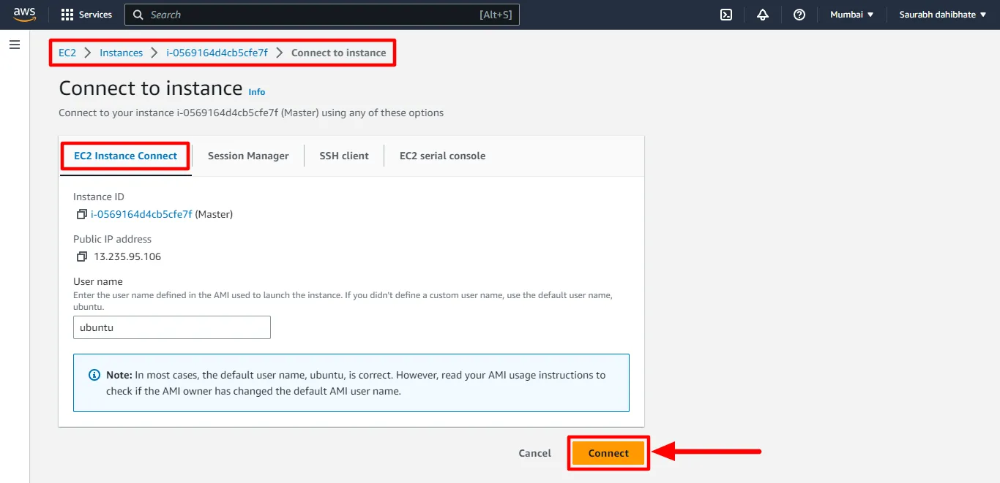
- Add the Ansible PPA repositoryand update packages using the following command:
sudo apt-add-repository ppa:ansible/ansible
sudo apt update
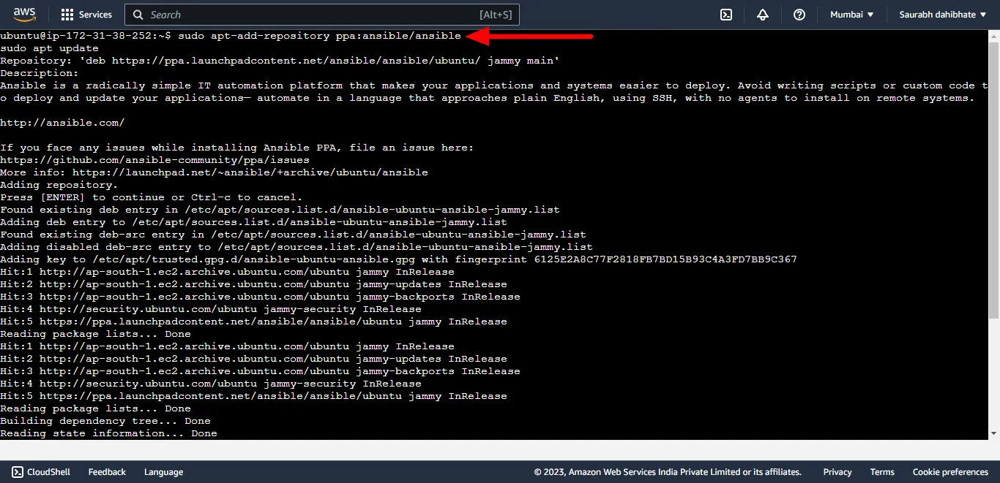
- Install Ansible using the following command:
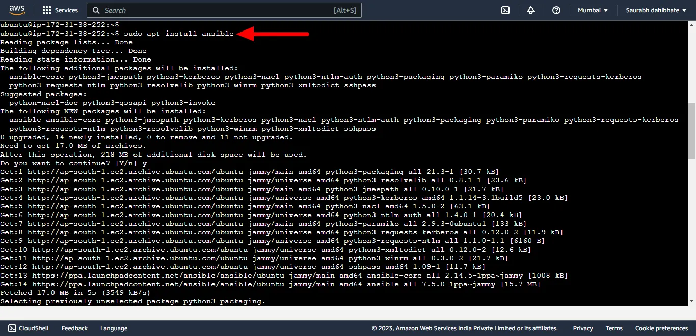
- Once the installation is complete, you can check the version of Ansible using the following command:
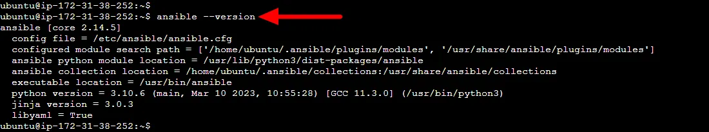
🌟 step-3-transferring-private-SSH-key-to-the-ansible-controller-server
- After deploying the 3 EC2 instances earlier with the same key, you have downloaded the private key to your local computer, likely in the Download folder. Locate that private key with the following command:
cd ~/Downloads
ls *.pem
- Open and copy
.pemprivate key file from local using the command below:
cat ansible-key.pem
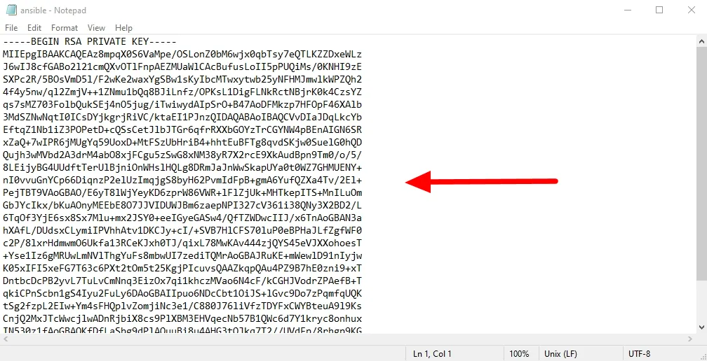
-
To proceed with the setup, copy the private key to the Ansible controller node (ansible_master) by creating a new file at
/home/ubuntu/.sshand pasting the private key in that file. 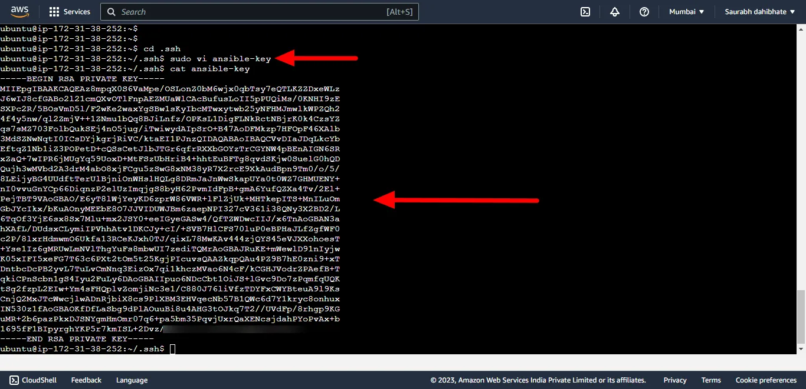 -
Give permissions to the private key file using chmod command.
sudo chmod 600 ansible-key
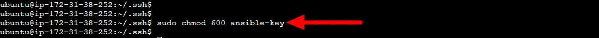
Access the inventory file using sudo nano /etc/ansible/hosts
- Create inventory file at location
/etc/ansible/hostswhich is by default location of file. Ansible hosts file is a configuration file that contains a list of hosts or servers. Add the IP addresses of the servers also add private key file location to use for authentication.
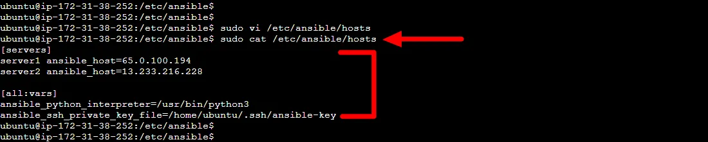
🌟 step4-create-playbook-to-install-nginx
- Create a playbook folder at the root
mkdir ~/playbook
- Enter the
playbookfolder
cd ~/playbook
- create playbook
nginx-install.ymlfile as follow:
sudo vi nginx-install.yml
- Copy the content of the playbook from below and paste it into
nginx-install.yml
---
- name: This playbook will install nginx
hosts: servers
become: yes
tasks:
- name: update apt cache
apt:
update_cache: yes
- name: Install nginx
apt:
name: nginx
state: latest
- name: start nginx
service:
name: nginx
state: started
- Verify content
sudo cat nginx-install.yml
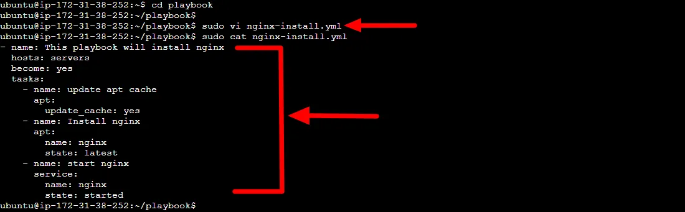
Playbook Overview for Nginx Web Server
In this playbook, we automate the installation and startup of the Nginx web server on a group of servers. Below is an explanation of what each section accomplishes:
- name: "This playbook will install nginx" - This comment describes the purpose of the playbook.
- hosts: "servers" - Specifies the target servers where the tasks will be executed. Replace
serverswith the actual name or group of servers defined in the Ansible inventory. - become: "yes" - Instructs Ansible to run the tasks with elevated privileges (using
sudoorroot). - tasks:
- update apt cache - A task that uses the
aptmodule to update the package cache on the target servers. - Install nginx - A task that installs the latest version of Nginx using the
aptmodule. - start nginx - A task that starts the Nginx service on the target servers using the
servicemodule.
Commands to Run Playbook
- Run playbook using the
ansible-playbookcommand. - Set the right permissions to run the playbook:
chmod 600 /home/ubuntu/.ssh/ansible-key
sudo chown ubuntu:ubuntu /home/ubuntu/.ssh/ansible-key
ansible-playbook file-name.yml
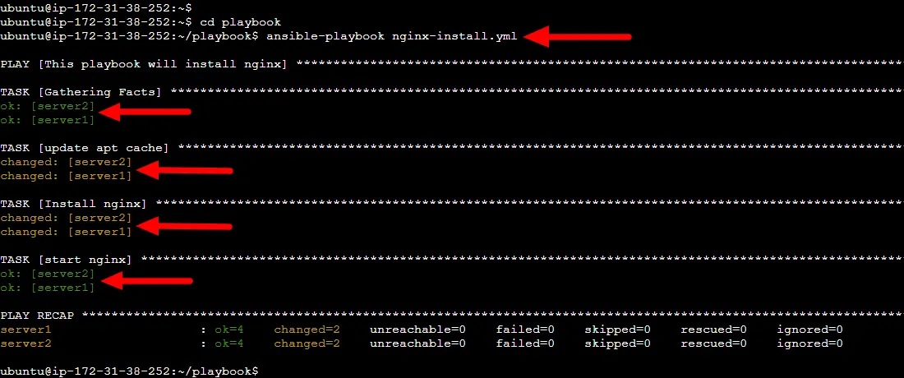
- Check the status of Nginx on the two EC2 instances

🌟 step5-deploy-webpage-using-playbook
-
Create a new file
index.htmlin the playbook directory, and add some sample content. -
Clone this GitHub repo below in your playbook directory: Access the Ansible Hello World App Repository
Note: In this case instead of HelloWorld folder our folder will be called ansible-helloworld-app. Also this folder is in the playbook folder.
-
Update our playbook to copy the webpage files to the default Nginx web server document root directory at
/var/www/html/ -
Add the task below into our existing playbook
nginx-install.yml
- name: deploy website
copy:
src: ansible-helloworld-app
dst: /var/www/html/
Note: Your full playbook template nginx-install.yml should look like this:
---
- name: This playbook will install nginx
hosts: servers
become: yes
tasks:
- name: update apt cache
apt:
update_cache: yes
- name: Install nginx
apt:
name: nginx
state: latest
- name: start nginx
service:
name: nginx
state: started
- name: deploy website
copy:
src: ansible-helloworld-app
dst: /var/www/html/
-
Run the playbook

-
Once the playbook finishes executing, open a web browser and enter the public IP address of one of the EC2 instances (
Ansible nodes) running Nginx.
Server 01 Website: 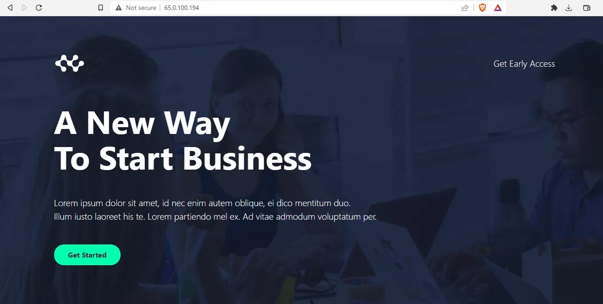
Server 02 Website:
🚀 step-6-cleanup
Delete all 3 EC2 instances created as part of this project from the AWS console.
📄 License
This project is licensed under the MIT License.